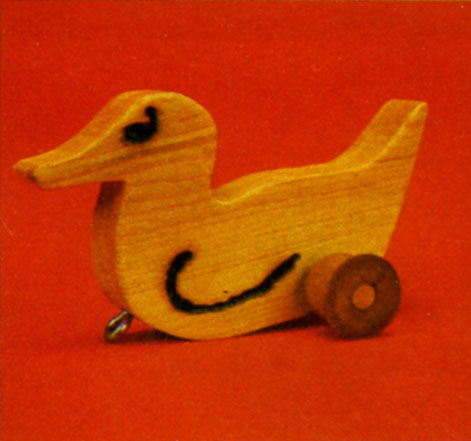
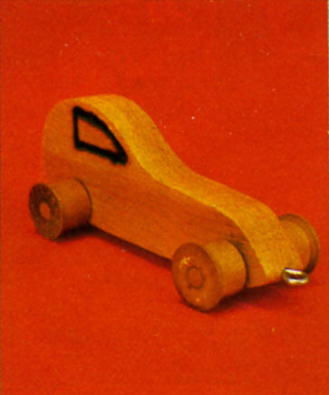
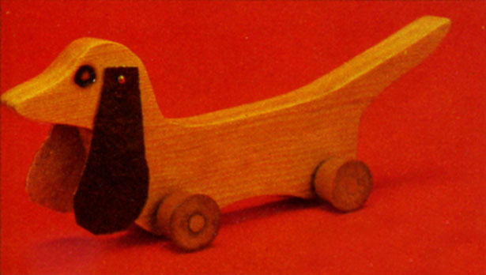
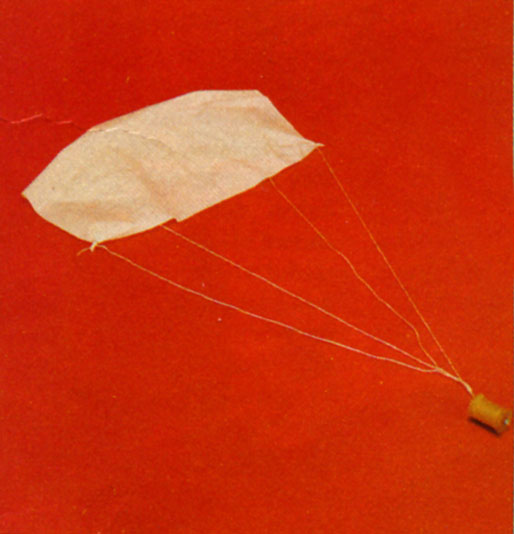
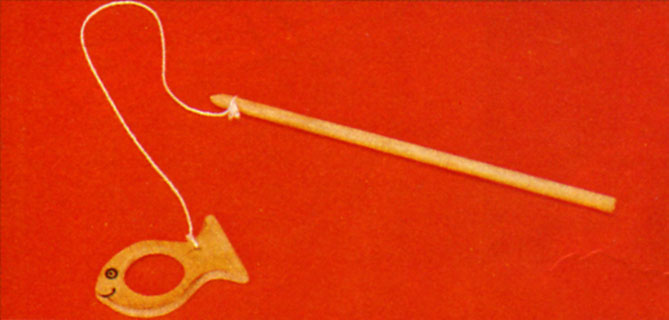
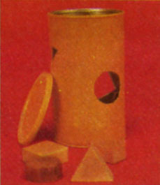
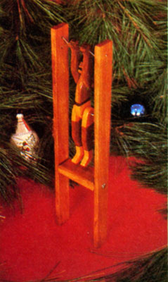
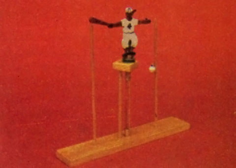
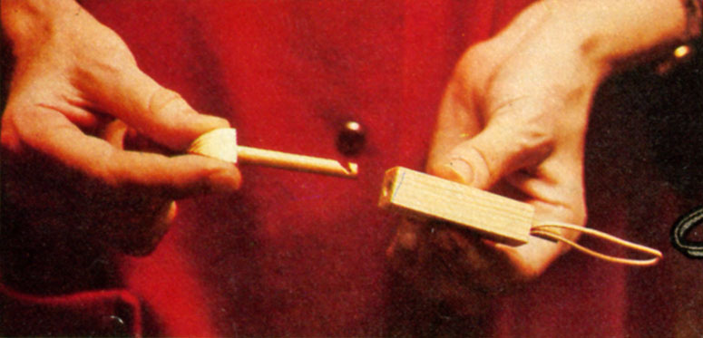

Old-Timey Toys From Christmas Past
You can make these hand and pull toys from recycled materials: pull duck, dog and car; parachute, spear the fish and a shape puzzle; flipper carnival man; baseball player; whistle, wooden snapper.
By the Mother Earth News editors
November/December 1978
Christmas (the season of sharing) isn't really Christmas unless you give a few toys to all those special "little folks" on your list. And here are some good, old-timey toys that you can make yourself from hardly more than odds and ends lying around the shop.
Wooden Duck, Car and Dog
"When it comes to the construction of toys," says Billie R. Tyler of Otis, Oregon, "nothing beats the strength and reliability of a solid chunk of wood." And solid chunks of wood are exactly what Mr. Tyler uses in the three playthings that he's designed especially for toddlers.
The duck is made by tracing its pattern onto a 3/4"-thick piece of pine board that is at least 5 inches long and 3 inches wide. (NOTE: Due to space limitations, all the "grid" drawings with this article have been reduced. The patterns must be redrawn on 1/2" squares before they're transferred to your working materials.)
Cut the wood to shape, drill a 3/8" hole through the duck's body as indicated, and sand the body smooth. The bird's wings and eyes are then burned or painted on each side of the piece of wood and (if painted) allowed to dry before the body is given a good protective coat of polyurethane.
Scrounge up a wooden spool, cut it in half, and cut a piece of 5/16" dowel to a length of 2-1/8". Securely glue one end of the dowel inside one half of the spool (so that the ends of both are flush). Then slip the "axle" through the hole in the duck's body, glue on the other half of the spool and check for free rotation of the wheels.
Paint the exposed portions of the wheels and axle with the polyurethane, screw a small "eye" into the front of the duck, tie on a stout string and the toy is complete.
Click here for downloadable construction details.
The car is very similar to the duck, except for its two sets of wheels. Scale the design up on a sheet of paper, transfer it to a 3/4"-thick piece of wood measuring 2-1/2" x 6", cut the car out and drill two 3/8" holes through its body. Paint (or burn) the windows on the little vehicle, let them dry, and then coat the car's body with polyurethane. Cut two spools in half and mount the four halves on two 5/16" x 2-1/8" axles in the same way that the spool wheels are mounted on the duck's axle. Paint the exposed surfaces of the wheels, insert an eye-screw into the car's "nose," and tie on a pull string.
Click here for downloadable construction details.
Follow the same procedure in the construction of the wooden dog. Scale its pattern up, trace it onto a 3/4" x 4" x 10" scrap of pine, cut Fido to shape, drill the two 3/8" axle holes, paint (or burn) on the eyes, let 'em dry and give Bowser's body a protective coat of polyurethane. The ears - two pieces of vinyl upholstery fabric - are securely attached with small brads (glue those brads if necessary to make absolutely certain they'll never come out for a toddler to swallow). Then the wheels are put on exactly as they're mounted on the duck and car above, a screw eye and pull-string are added, and the dog is "ready to roll."
Click here for downloadable construction details.
"Toys that entertain are all right," Talkeetna, Alaska's Gretchen Walker states, "but toys that entertain and teach are even better."
One of the simplest stocking stuffers of all - a toy which teaches that air really does have mass - is a parachute, and the one you see here couldn't be simpler to make. Cut out and hem a 15" square of light fabric (the lighter and tougher, the better) and tie a 24" length of kite cord to each of its corners. Then thread a spool over the other ends of the lines and knot the four strings together so the spool can't slide off. When wadded up and tossed high into the air, of course, this toy parachute will pop open and float its payload (the spool) to the ground just like the real thing.
Click here for downloadable construction details.
Although the spear-the-fish game you see here is a traditional Eskimo plaything, variations of the little reflex coordinator can be found all over the world. (The idea is to hold the stick with the fish suspended from its string, then toss the fish into the air and spear it in one smooth motion. This is more difficult than you might think!)
Scale the fish up and trace it off onto a 1/4" x 1-1/2" x 3" scrap of wood. Use a drill and coping saw to cut out the big "spear" hole, and don't forget to drill out the small hole on the fish's body that the suspension string ties into. Sand the wood smooth and either burn or paint the eyes and mouth into both sides of the body. Then give the fish and a 1/4" x 8" wooden dowel a protective coat of polyurethane. When they've both dried, tie the two together as shown with about a foot of strong string. (NOTE: The string will stay positioned on the end of the dowel if you use a knife to carve a slightly indented "ring" right around the tip of the stick for the cord to fit down into.)
Click here for downloadable construction details.
Sooner or later we all have to learn that "you can't fit a square peg into a round hole," and that's exactly what Ms. Walker's shape perception puzzle is all about.
The toy's main body is nothing but an empty oatmeal container (or, if you want a plaything that'll really stand up to abuse, try a section of a large, heavy-walled mailing tube). And the various shapes are all cut from a 12" x 4" piece of 3/4" wood.
Trace the shapes (make up your own, if you like!) onto the wood, cut them out, sand 'em smooth and either paint the pieces or finish them with polyurethane. The shapes are then traced onto the box at various places on its surface, the holes are cut out and, if you wish, the container is painted in a bright color. Store the blocks of wood in the box, then dump 'em all out and give your tot a chance to figure out how to get 'em back inside the container through the proper openings.
Click here for downloadable construction details.
"This is one of the traditional toys of Europe," writes Susan Allan (all the way from Dormillouse, France), "and a local woodcarver, Paul Peschon, sells every one he makes here in his small Alpine village."
Start your little flipper by scaling up the grid drawings and then tracing the patterns onto a scrap of 5/16"-thick hardwood (remember, you'll need one body, two arms and two legs for each toy). Carefully cut out the five pieces of wood and drill the 1/16" (four), the 3/16" (two), the 5/32" (three), and the 7/32" (one) holes as shown. Sand the wood smooth, paint on the details and give all five sections of the acrobat's body a protective coat of polyurethane.
Our daring young man does his flipping on a trapeze made of two pieces of 5/16" x 1" x 13" hardwood, and one which measures 1/2" x 1" x 2-1/2". Drill two 1/16" holes into one end of each of the longer pieces of wood (the first hole is spaced 1/2" from the end and the second 1/2" farther down yet). It's also a good idea to drill two 5/32" holes, side by side, through both pieces of wood, 8-1/2" down from the same end (see drawing). These last two holes in each side of the trapeze should be countersunk and then used as guides for the drilling of two 1/8" holes into each end of the trapeze's 1/2" x 1" x 2-1/2" crosspiece. (Note, too, the way in which the ends of the crosspiece, are tapered to give the finished toy, more "action.") Sand the three drilled sections of wood smooth and coat them with polyurethane.
As soon as these last three parts have dried, fasten the short crosspiece between the two long sections of the trapeze with four No. 6 x 3/4" wood screws (don't tighten them quite all the way down).
Next slip a 1" length of 3/16" dowel through the upper hole in the acrobat's body and press and glue his arms onto the dowel so that there's just enough space between them and the body for the arms to move freely. The legs are then fastened to the body with a 1/8" x 1-1/4" cotter pin (so they'll flop independently of each other). And a 10" length of stout monofilament fishing line is crisscrossed as shown and tied through the two holes in each side of the frame and the holes in each of the acrobat's arms.
See? That wasn't really too difficult. But when a youngster starts to squeeze the sections of the trapeze that extend below the frame's crossbar . . . . Wow! Does this daring young acrobat ever perform!
Click here for downloadable construction details.
You could look forever in the toy stores and never find this one , cause its "works" are actually copied from the innards of a sixteenth century clock! (We've transformed the mechanism into a toy simply by perching a baseball player on its top.)
Make the batter by scaling his pattern up on a 1/2" grid and then trace him off onto a scrap of 1/8" x 4" x 5-1/2" wood (wall paneling is fine). Cut Casey out with a coping saw, drill a small hole in his open hand, sand the figure smooth and paint on the details (make both sides the "front," if you like).
Then find a 1/2" x 2" x 10" piece of wood and drill a 3/8" hole through its center, a 1/8" hole 2-1/2" in from each end, and a 1/4" hole 3/4" to one side of the 3/8" hole that you made in the block's center.
Next take a piece of 3/8" x 1-1/4" dowel and saw a small notch in it (the notch is started about 3/4" from one end of the dowel and is slanted at a 45° angle toward that same end). Make the same cut in one end of a 3/8" x 2" dowel, and add a 1/4" deep slot to the 2" dowel's other end. This is also the time to cut out a 1/2" x 1-1/2" x 1-1/2" block of wood and drill two holes (one 7/16" and the other 1/4" in diameter) through it, spaced 3/4" apart.
Glue the shorter 3/8" dowel into the large hole in the toy's base and glue the batter's feet quite firmly down into the slot on top of the longer 3/8" dowel. Then push and glue a 1/4" X 6" dowel down into the 1/4" hole in the base and mount and glue the 1/2" x 1-1/2" x 1-1/2" block on top of this dowel so that its 7/ 16" hole is positioned directly over the short 3/8" dowel that you've just glued into the center of the base.
Slip a 1/2" flat washer, a plastic garden hose gasket and another 1/2" flat washer up over the 3/8" dowel that you've glued to the batter's feet. Then slide that dowel down through the 7/16" hole in the small block of wood and stretch a medium-sized rubber band between the "hooks" (the 45° cuts) that you've made in the two 3/8" dowels.
Dig around in the family sewing box or the lady of the house's jewelry box until you find a discarded pearl or round trinket of some sort that has an eyelet attached to it, tie a 4" length of string to the eyelet, and tie the other end of the cord to your little ballplayer's hand. Then push and glue two 1/8" x 9" dowels down into the last two holes in Casey's base and give all the remaining exposed wood a coat of polyurethane.
To make your slugger "play ball," turn him upside down and slowly spin the batter until the rubber band is wound. Then set the novelty upright on a flat surface, and watch the humorous way that Casey "swings, stops, then swings again" as his rubber band unwinds.
Click here for downloadable construction details.
Two-tone Whistle
Boys and girls of all ages will enjoy this one. Not only is the whistle pocketsized, it blasts out two different pitches at once (which makes it sound a very great deal like the "tooter" on an old steam engine).
Start by cutting out a 7/8" x 1-1/2" x 3-1/2" block of wood. Then drill two 3/8" holes side by side in one end of the block. These holes are centered 1/2" up from the block's lower edge and 5/8" away from each other (so their edges will wind up 1/4" apart). Drill one hole 2-9/16" deep and the other 3" deep.
Next, drill two 1/4" holes through the top of the whistle 1" from the mouthpiece end and far enough apart so that each of the 1/4" holes pierces just one of the 3/8" chambers without cutting into the separating wall between them. Bevel the tops of the two 1/4" holes with a countersink.
Then cut two 3/4" lengths of 3/8" dowel and sand one side of each flat (sand until the 3/8" dowels measure only 1/4" thick from their flat to their far sides). Spread a thin layer of glue over the unsanded sides of these dowels and press them - flats up - into the holes that you've drilled into the whistle's end. (HINT: Now is the time to test the whistle, before the glue dries. You may have to slide the dowels in or out slightly to get the best tones.) After the glue has set, you may have to sand the ends of the dowels (if they protrude) flush with the whistle's "business end."
Finally, measure 1/2" up from the bottom of the whistle's mouthpiece and 3/4" forward of its bottom edge Connect these two points with a curved line drawn on the side of the block and then cut the line out with a coping saw. (Don't be afraid to cut into the stopper dowels, as long as you don't saw all the way into the air chambers. Let the illustration be your guide.) And saw or sand a slight taper into the top of the mouthpiece. These two cuts - one on the bottom of the whistle and the other on the top - make it easier to hold the noise maker between the lips.
Sand the whistle down, round off all its corners and give it a good coat, polyurethane or any harmless sealer your choice. And then plug your ear with cotton, because the lads in the house never seem to tire of playing with this one!
Click here for downloadable construction details.
The Snap-toy Trick
Better make several of these, 'cause you're going to want to keep at least a couple for yourself.
Start with a piece of wood that's 9/16" square and 3-1/8" long. Fix up a jig of some sort that'll hold the piece of wood straight up on end and then drill a 3/16" hole all the way through the block's length except for the last 3/8". Remove the drill, take the block out of the jig and cut, whittle and sand its undrilled end into a rounded pyramid shape. Sand the whole block as smooth as you can make it.
Now cut the pyramid off 5/8" from the main block's end and glue a 2-1/4"-long, 3/16" dowel into the pyramid's base. Once the glue has set, sand the dowel until it easily slides in and out of the long hole in the main block and cut a notch (see drawing) into the dowel's base.
Insert a good rubber band partway into one end of the main block and hold it there with a 1/2"-long, wedged-in piece of 3/16" dowel. Finish all exposed parts of the toy with clear acrylic (the smoother all the parts are - especially the pyramid - the better).
Now hand this little stumper to a friend and tell him or her to insert the base of the "arrow" into the main block of wood, hook the dowel's notch over the rubber band and then pull the arrow out until the rubber band pulls it back with a sharp snap. Try as your friend may, however, he or she will never be able to do that, despite the fact that you seem to do it every time.
The trick? It's all in that smoothly rounded and finished pyramid. You won't be able to hook the rubber band either. But by tightly squeezing that slick pyramid between your fingers as you slowly pull the arrow out of the main block, you can suddenly make the movable assembly fly back with such a quick, loud pop that your "mark" will be absolutely convinced the rubber band did it.
Click here for downloadable construction details.

Wooden pull duck - see the text for a link to downloadable construction details.
|

Wooden pull car - see the text for a link to downloadable construction details.
|

Wooden pull dog - see the text for a link to downloadable construction details.
|

Thread spool parachute - see the text for a link to downloadable construction details.
|

Spear the fish - see the text for a link to downloadable construction details.
|

Shape perception puzzle - see the text for a link to downloadable construction details.
|

Little wooden flipper - see the text for a link to downloadable construction details.
|

Help this baseball slugger hit the ball - see the text for a link to downloadable construction details.
|
Wooden whistle - see the text for a link to downloadable construction details.
|

Wooden snap toy - see the text for a link to downloadable construction details.
|
|
|